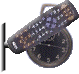
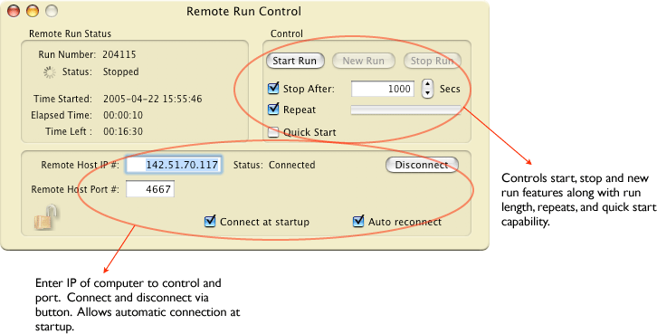

Configuration icon for Remote Run Control: 
Remote run control completely controls the connecting ORCA session. All run parameters are displayed in the Remote window including run number and elapsed time.
